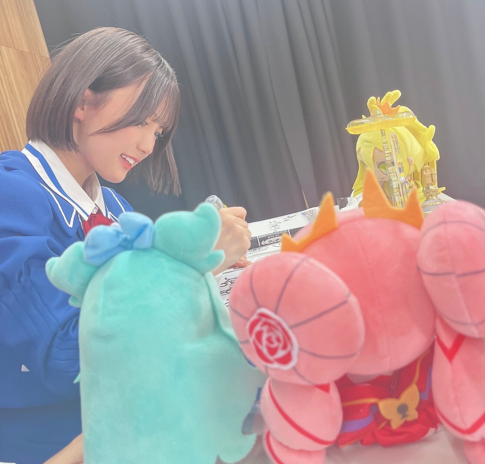

橘杏咲の立ち話もなんですから！ 第13回橘杏咲的“站着聊可说不完！” 第13回
皆さん、こんにちは！
大家好！
時が経つのは早いこと早いこと…今月は8月ですね。
时光飞逝真是太快太快了……这个月已经是8月了呢。
暑すぎる…ずっとお水を飲んでいたいくらい、永遠に水分が足りていないような感覚に陥ってしまいます。
太热了……热到让人恨不得一直捧着水喝，总觉得体内水分永远都不够用。
私は熱中症になりやすい体質なので、お水は欠かせません。皆さんも本当にお気をつけて泣
我是特别容易中暑的体质，所以饮用水一刻都不能离身。大家也千万一定要小心呀（泣）。
今月は久々にお洋服とサンダルを購入して、ようやく夏に追いついてきました🌻🍉☀️
这个月我久违地买了新衣服和凉鞋，总算是追上夏天的脚步啦🌻🍉☀️
そしてやーっと今年の夏は何をしようかな、と考え始めているのですが、もしかして今月で暦上としての夏は終わるのでは？
然后我才终——于开始琢磨今年夏天要做点什么，不过说起来，按日历算这个月过完夏天岂不是就要结束了？
今年もプールや海で泳ぐことは無さそうです。
看来今年也不会去泳池或者海边游泳了。
と言っても、私は全く泳げないのですが…
话虽如此，其实我压根就是个旱鸭子啦……
だって今まで一度もプールの授業が無かったのだもの！しょうがないですよね！！
因为我从小到大一次游泳课都没上过嘛！这也是没办法的事对不对!!
小学生の時に夏休み限定でスイミングスクールに通ったことはあります。その時はクロール25メートル泳げたんです。本当なんです。
小学的时候我倒是在暑假限定期去上过游泳班。那时候我可是能游完25米自由泳的哦。真的啦。
でも今はそのかけらもないです。浮きません、動いたら沈みます。あ、けのびは出来ます！
不过现在已经一点影子都不剩了。浮不起来，一动就往下沉。啊，蹬壁滑行我倒是会的！
浮き輪にずーっとふよふよ浮いていたいなぁ💭
好想就这么套着游泳圈悠哉悠哉地一直漂着呀💭
まず、私が優谷優役を担当させていただいております、TVアニメ「ばっどがーる」がスタートしましたね！！
首先，由我担任优谷优一角配音的 TV 动画《坏女孩》终于开播啦!!
すでに4話まで放送されましたが、動いている優たち、可愛すぎる😿😿
目前已经播到第4话了，动起来的小优她们简直可爱过头了😿😿
ばっどがーるの登場人物たちは大抵かなり、とても変わっている子ばかりなのですが、とにかくみんな可愛い。
《坏女孩》里的登场角色大多都相当、非常奇特，但总之每一个都超级可爱。
優谷さんももれなく、いや筆頭ですね、変な子の。しっかりと変な子ですが、動くとより小動物的可愛らしさがマシマシで愛らしいにもほどがあります…なんて可愛いの。
优谷同学自然也不例外——不，她简直是“怪孩子”里的头号代表呢。虽然是个货真价实的怪孩子，但一动起来那股小动物般的可爱劲儿更是加倍暴涨，讨人喜欢到没边了……怎么能这么可爱呢。
昔からアニメでは可愛い女の子キャラクターばかり見ていた私にとって、幸せも幸せなんですよ。
对于从小看动画就只盯着可爱女孩子看的我来说，这简直是幸福中的大幸福呀。
天狼群としての活動もたくさんで、楽しみが尽きませんね〜！！
作为天狼群的活动也满满当当，乐趣真是绵延不绝呢〜!!
最近の天狼群ニュースといえば…！なんと、声優グランプリさんの8月号にて、アナザーカバーを飾らせていただき、巻末特集もしていただきました！
说到最近关于天狼群的新动态……！我们竟然登上了《声优Grand Prix》8月号的封底，而且还推出了卷末特辑！
こうしてコラムを連載させていただいている声優グランプリさんの誌面にも登場することができて嬉しかったです😭
能够登上我一直连载专栏的《声优Grand Prix》杂志正刊版面，真的太开心了😭
ばっどがーる公式ラジオ、ワルラジやアルバム発売決定、「KING OF EVIL」MV公開…などなど色々ありますので是非チェックしてください〜〜！楽曲も続々配信されておりますのでたくさん聴いてくださいね！ ちなみに私が体調を崩してしまい、お休みさせていただいたラジオはしっかり聴かせていただきました。ちゃんと恥ずかしかったです。
《坏女孩》官方广播节目《ワルラジ》、决定发售专辑、《KING OF EVIL》MV 公开……还有好多好多动态，请大家务必多多关注〜〜！歌曲也在陆续上线流媒体，请多听多循环哦！顺便一提，之前我因为身体不适缺席的那期广播我也认认真真听完了，果然听得羞耻感拉满。
でも、皆さんの優しさが身に染みました…いつも本当にお優しい、なんて素敵な先輩たちなんでしょう…しっかりしなきゃと思いつつも、つい甘えてしまうー！でもしっかりも覚えなくてはなので、60%甘で💗
不过，大家的温柔真的让我感动得暖进心坎里……前辈们平时就总是那么亲切，怎么能有这么棒的前辈们呢……虽然我心里一直想着必须更可靠一点，却还是忍不住撒娇〜！但我也得学会独当一面才行，所以就先保持60%撒娇模式吧💗
そして、オルケリアとして二度目のステージ、「リスアニ！2025ナツヤスミ」に出演させていただきました！
接着，我们作为 ORCHERIA 登上了第二次舞台——出演了“LisAni! 2025 ナツヤスミ”！
初めての武道館から半年、成長したオルケリアの姿を皆さんにお見せすることができたのではないでしょうか…！
距离首次站上武道馆已经过去了半年，这次应该有把成长后的 ORCHERIA 展现给大家了吧……！
日頃の歌やアフレコが、確実に私たちを成長させてくれているのではないだろうか、と自身でも小さな成長を感じられて嬉しかったです。
平日里日复一日的歌唱与配音录制，确实在一步步推动着我们进步吧——我自己也能切身感受到点滴的成长，觉得特别欣慰。
緊張もほとんどなく、とにかくワクワクを背負ってそのまま一緒にステージでパフォーマンスをすることができたような気がしています！
几乎没有怎么紧张，感觉自己完全是背负着满心的雀跃与期待，直接就那样在舞台上和大家一起完成了演出！
私自身としても二度目のステージでしたが、やっぱりライブって楽しいですね。
虽然对我自己来说这也只是第二次站上舞台，但 Live 演出果然太快乐了呢。
もっともっと上手にパフォーマンス出来るようになりたい👊🏻
好想能把舞台表现打磨得越来越出色呀👊🏻
三度目のステージは、もう目の前 8/3(日)！プリンセッション・オーケストラ 1st EVENT「DREAM SESSION」でのミニライブです！
第三次舞台已经近在眼前，就在8月3日（周日）！是《Princession Orchestra》1st EVENT“DREAM SESSION”上的迷你 Live！
初めての単独イベント、プリオケのことを知っている方しかいらっしゃらない空間でのパフォーマンス…どんな感じになるのか、楽しみです！！がんばるぞ〜！
第一次单独专场活动，在座全都是熟悉《Princession Orchestra》的观众，在这样的空间里演出……会是怎样的光景呢，好期待呀!! 加油冲呀〜！
アニメ放送も第2クールに突入し、物語も進んできましたね！新キャラたちも続々と出てきて、どんどんプリオケが賑やかになっていきますね〜
动画播出也迈入第2季度，剧情逐渐深入展开了呢！新角色们也接二连三登场，《Princession Orchestra》变得越来越热闹啦〜
16話でお披露目された、ミーティアの新戦闘曲「エクストリーム リ・ボーン」聴いてくださりましたか！？まだの方は、今すぐにでも聴きに行ってください☺️
第16话首次亮相的 Meteor 新战斗曲《エクストリーム リ・ボーン》，大家都听了吗!? 还没听过的朋友，现在立刻马上就去听吧☺️
16話は自分にとっても、とても大切な回なんです。成長したながせの優しく真っ直ぐな言葉が胸に刺さります。この子良いこと言う…私もながせに、ミーティアにたくさん助けられています。一緒に成長できてると嬉しいな、いや成長できるようまだまだ頑張ろう〜！
第16话对我自己来说也是非常珍贵的一集。成长后的流星说出的那些温柔又坦率的话语，直击我的心扉。这孩子说得真好啊……我也从流星和 Meteor 身上得到了数不清的力量。如果能和她一起共同成长就太好了——不，为了能不断成长，我还要更加努力才行〜！
プリンセスMTGのホワイトボードを描く私を見守ってくれているプリンセスぬいたち📸
守护着我正在画 Princess Meeting 白板的公主毛绒玩偶们📸

そしてそして、なんとあさきタイムの初ゲストに呼んでいただきました！！
而且而且，我竟然受邀成为了《あさきタイム》的首位嘉宾!!
いや〜嬉しかった〜！楽しかった〜！！
哎呀〜太开心了〜！太好玩了〜!!
あさきに「初ゲストはあなたしかいないでしょ、胸張って私しかいないって思って良いんだから」と言われたので張りに張ります！私が初ゲストだぁ！
麻希跟我说“第一位嘉宾非你莫属吧，你就挺起胸膛理直气壮地想着‘除了我没别人’好了”，那我可就大大方方挺起胸膛了！我就是首位嘉宾啦！
いつものテンションで爆お喋りをかましてしまいました。寝る前に聴いても眠くならない、やかましradioになってしまったような気がします。まぁあさきとあずさだからしょうがないですね😼🙌🏻
我完全按平时的状态一顿疯狂畅聊，感觉都变成了一档睡前听了也绝对睡不着的“吵闹电台”了。嘛，毕竟是麻希和杏咲组合嘛，这也是没办法的事😼🙌🏻
でもひとつ、んわぁ〜…ということがありまして、、、
不过有一件事，让我心里“唔哇〜……”了一下……
少し恥じらいが強く出過ぎてしまったと！！いつもの空気感を公の場で晒してしまうことへの恥じらいが出過ぎた結果、いつもよりツンケンしてしまった気がします。反省反省
就是我好像害羞过头了!! 因为要把我们平时私下相处的氛围暴露在公开场合，实在太不好意思了，结果反而比平时表现得更别扭带刺了。反省反省！
全然恥ずかしがらないあさきさんが異質なんだと思うんですけどねぇ！ラジオを聴いてこいつ本当にあさきのこと好きなんか？と思われた方もいらっしゃるかもですが、しっかり双方向特大矢印の大マブなのでご安心を。
不过我觉得压根不觉得害羞的麻希才是不按常理出牌的异类吧！听完广播可能会有人怀疑“这家伙真的喜欢麻希吗？”，但我们俩绝对是双向超大号箭头的超级挚友，大家尽管放心哦。
でも、今までの他の場での配信やイベントなどの中で1番と言って良いほど、橘杏咲の素だったかもしれないです。分からないですけどもね！！くー！恥ずかしい！
不过话说回来，比起至今为止在其他场合的直播或活动，这次说不定是最能展现橘杏咲真实本色的一次呢。虽然我自己也说不准啦!! 呜哇！好害羞！
たまにお話ししますが、私は自分が照れる、みたいな状況がすごく苦手で…
偶尔也跟大家聊过，我特别不擅长应付“自己会觉得害羞脸红”之类的场面……
人がやっているのを見るのはむしろ好きなのですが。自分が主体になるのが本当に……いずれ慣れるよと言われ続けてはいるものの、慣れる気配は一ミリも感じません。なんて難しいんでしょうか。面倒な女です私は…。
看别人那样我反而挺爱看的，可一旦轮到自己当主角就真的……虽然一直有人跟我说“早晚会习惯的”，但我连一毫米习惯的苗头都没感觉到。怎么会这么难呀。我真是个麻烦的女人……
照れるお芝居も苦手なので、そのお芝居を自然に引き出してくださるにいなさんの亜鳥にはとっても助けられました。
因为我连害羞的演技也不太擅长，所以非常感谢にいな前辈饰演的亚鸟，总是能非常自然地把我的害羞情绪牵引出来，真的帮了我大忙。
コラムを書いている今はまだラジオがオンエアされていないので、どんな感じになっているのか分からず不安ですが、きっと良い感じにウェイウェイしていると願って🙏🏻
写这篇专栏的时候这期广播还没播出，不知道最终剪出来是什么效果心里还有点忐忑，只祈祷听起来是热热闹闹、嗨得恰到好处吧🙏🏻
今 といえば、絶賛期末地獄にいます。
说到“现在”，我正身陷期末地狱水深火热之中。
なんかもう、規則正しくとか言っていられないほどには毎日何かしらに追われすぎていて、不規則を極めています。
怎么说呢，每天都被这样那样的事情追着跑，根本顾不上什么规律生活了，已经把“不规律”贯彻到极致啦。
一つ終われば、新しいもう一つの締め切り間近。テストとレポート、どちらもどちらなりの辛さがありますよね。私は基本レポート派ですが、最近は長時間文章を熟考するよりも、テストで一か八かのほうが楽な気がしてしまっています。でもテストはやっぱり嫌ですが…
刚赶完一个，下一个截止日期又迫在眉睫。考试和论文报告各有各的折磨人之处呢。我本来基本是写报告派，但最近反而觉得比起长时间绞尽脑汁打磨文章，直接考试孤注一掷似乎还轻松点。不过真到考试我果然还是很讨厌就是了……
いやもう頑張るしかないですね。締め切りに追われる全ての方々、頑張りましょう。
唉，总之也只能咬牙冲了呢。所有正被截止日期追着跑的朋友们，咱们一起加油吧。
ポジティブを自称している私ですが、最近は弱音が出てくることが多くていやだなぁと悶々としています。過ぎたことは変わらないから！と切り替えが早いのも良いところだと思っていたのですが、最近は後悔が多くて多くて…難しいですね。
虽然我一向自称是个乐天派，但最近常常忍不住吐露丧气话，心里总觉得讨厌自己这样、闷闷不乐的。原本还觉得自己“过去的事已经无法改变！”这种心态切换快是个优点呢，可最近总有好多好多懊悔的情绪……真难调节啊。
8月上旬が終わったら、期末地獄からは解放されるので、それまでの辛抱、。ご褒美を決めて、あと一踏ん張りがんばるぞ✨
熬过8月上旬就能从期末地狱里彻底解脱了，再忍耐这最后一段就好……定好给自己的奖励，再加最后一把劲加油冲呀✨
さて、ではいつも通り8月の目標を…
好了，那么照例来公布8月的目标……
8月の目標はズバリ
8月的目标就是——
『やりたくても出来なかったことをやる』
《去做想做却没能做成的事》
夏休みに突入するので、やりたいと思っても時間的に難しかったことや後回しにしていたことなどをやってみたいと思います。たくさん寝て、たくさん食べたい！！やりたいことリストを久々に開こうかしら。
马上就要步入暑假了，我想去把那些一直想做却因为没时间搁置下来的事、一拖再拖的事都逐一实现。要大睡特睡、大吃特吃!! 要不久违地翻开我的“想做的事清单”看看吧。
ここまで読んでくださり、ありがとうございました！
非常感谢大家一直读到这里！
暑い日が続きますね。水分、塩分しっかりとって、健康には十分気をつけて夏を楽しみましょう！
炎热的日子还在持续呢。大家一定要好好补充水分和盐分，格外注意身体健康，尽情享受这个夏天吧！
テーマや質問、感想など、引き続きお待ちしております！
继续期待大家的主题建议、提问和感想哦！
では〜👋🏻
那么下次见啦〜👋🏻
橘さんに質問！向橘小姐提问！
Q：オルケリアとして活動していますがオルケリアの2人の良いところを知りたいです！ またプリオケの魅力も教えてください！！！ （山口県・プリンスジャイアント）
问：您目前正在作为 ORCHERIA 活动，我想了解 ORCHERIA 另外两位成员的优点！同时也请告诉我《Princession Orchestra》的魅力所在!!!（山口县·プリンスジャイアント）
プリンスジャイアントさん、ご質問ありがとうございます！
プリンスジャイアント，感谢你的提问！
2人の良いところなんて億とあるので、その中で私には真似できないすごいな。と思う良いところ(?)をひとつまみ。
两个人的优点简直多达上亿个，我就从中挑出一点点我觉得“太厉害了，我根本学不来”的闪光点（？）来聊聊吧。
これまでも、これからも何度も色々なところで言っているかもしれませんが、簡単に言いますと…
虽然以前说过、以后可能也还会在各种场合反复提起，但简单概括的话就是……
あおいさん 最強度胸
葵小姐：最强胆量
ふじもとさん 最強自己鍛錬
藤本小姐：最强自我磨砺
でしょうか！2人ともとっても優しくて、強くて、まさにプリンセスみたいだなぁって思います。
大概就是这样吧！她们俩既无比温柔，又内心坚强，我觉得她们简直就像真正的公主一样。
あおいさんは、私が恥ずかしがって出来ないことやビビってしまうことを全て100%でできてしまうんです。本当にすごい！柔らかい人間性の中に太い芯があって。それこそみなもちゃんみたいだなぁ、と。
葵小姐能把我因为害羞做不到、或者会怯场发怵的事情全部以100%的投入完美做到。真的太了不起了！柔和温润的性格里藏着一根坚韧的主心骨，我觉得这简直就和水萌酱一模一样呢。
ふじもとさんは自己鍛錬がすごい。常に自分に進化を求めているというか、前に進み続けるストイックな人だなと思います。自分に何か足りない隙間を見つけると、持ち帰ってその改善案をしっかり探し選んで埋めていく、凄すぎる。2人とも大尊敬している仲間です😻♡
藤本小姐的自我磨砺非常惊人。她永远在督促自己不断进化，是个一直在向前迈进、极度自律刻苦的人。一旦察觉自己还有什么不足的空缺，就会带回去认真钻研、筛选出改进方案并把短板补齐，实在太强了。她们两位都是我打心底深深尊敬的伙伴😻♡
プリオケの魅力は、パワーですね。
至于《Princession Orchestra》的魅力，就是“能量”呢。
物語も曲もキャラクターもみんなパワーがあるんです。
无论是故事、歌曲还是角色，全都充满了能量。
抽象的だけれど、とにかくパワーがある！プリオケからしか得られないパワーです。
虽然听起来有点抽象，但总之就是很有能量！那是只有从《Princession Orchestra》里才能汲取到的独特能量。
そのパワーは、忘れていたことを思い出させてくれたり、踏み切れない背中を押してくれたり、色々なことの元になること間違いなしです！
那股能量定能帮你唤醒遗忘的初心，或是推一把犹豫不决的你，毫无疑问会成为许许多多美好事物的源泉！
本当に素敵な作品なので、まだの方はこれからすぐに、
这真的是一部特别棒的作品，还没看过的朋友请从现在起立刻入坑，
観てくださっている方はこれからもずっと観続けてください！よろしくお願いします💫
已经在追看的朋友今后也请一直一直追下去！拜托大家了💫